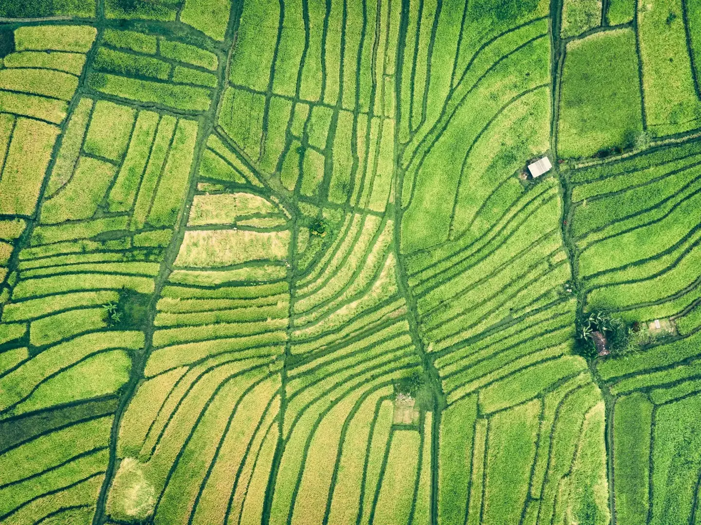
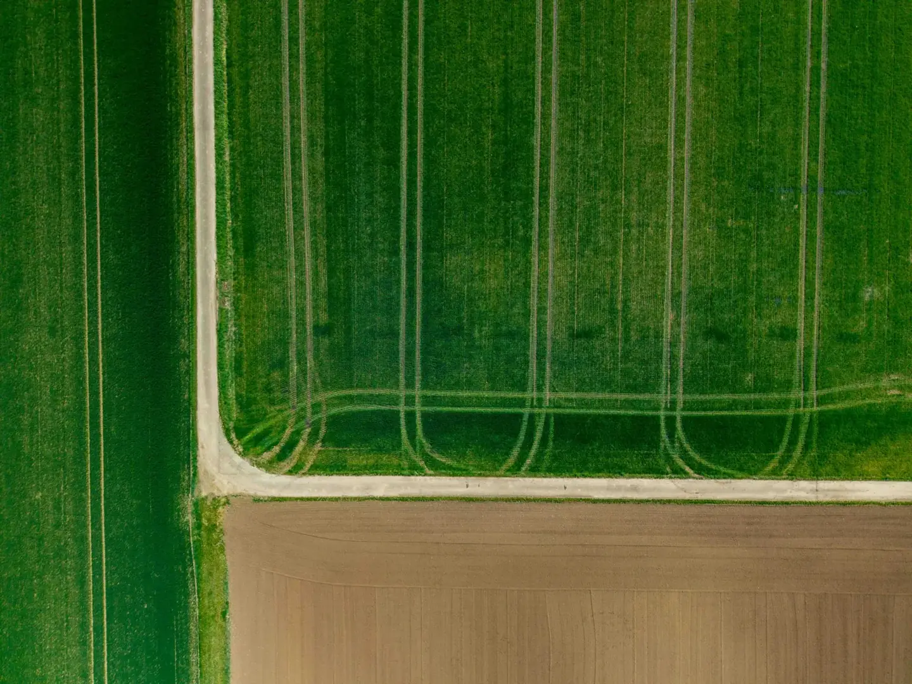

AGROSUSTENTA / 05 / GALERIA
O campo tem
muitas perspectivas.
Um convite para observar paisagens de produção e lembrar que os desafios do solo também envolvem trabalho e comunidades.

01 / Linhas que desenham o campo
Imagem ilustrativa de paisagem agrícola; não comprova manejo sustentável nem representa resultados do AgroSustenta.

02 / Uma paisagem de trabalho
Imagem ilustrativa de paisagem agrícola; não comprova manejo sustentável nem representa resultados do AgroSustenta.

03 / Olhar o solo de outra escala
Imagem ilustrativa de paisagem agrícola; não comprova manejo sustentável nem representa resultados do AgroSustenta.
Fotografias de uso ilustrativo, disponibilizadas sob a licença Unsplash. Não identificamos estas paisagens como brasileiras. Consulte a fonte de cada fotografia para a autoria e o contexto original.